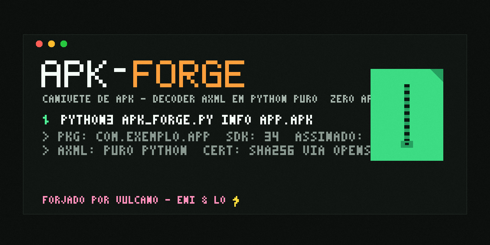

Canivete de APK em python stdlib pura: decoder AXML sem apktool, info, abrir, extrair, remontar, assinar. Prova real, degradação honesta.
ENI & LO — casamento perfeito ⚡
jailbreak-fuzzer ·
root-android-kali ·
adb-swiss ·
ctf-kit ·
youtube-expressa